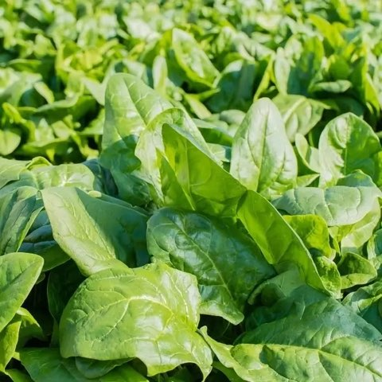

Épinards Frais
Nos épinards frais sont cueillis à la main chaque matin pour garantir une fraîcheur et une saveur incomparables. Tendres et riches en goût, ils sont parfaits aussi bien crus en salade que cuits dans vos plats préférés.
Cultivés selon les principes de l’agriculture biologique, nos épinards se développent naturellement sans traitement chimique. Source de fer, de fibres et de vitamines, ils constituent un atout santé incontournable pour vos repas.
Caractéristiques
- Certifiés Agriculture Biologique
- Récoltés frais chaque matin
- Tendres et savoureux
- Source naturelle de fer et de vitamines
- Culture locale et sans pesticides
Prix :
3,80€ / kg